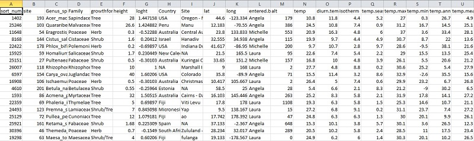

Tener habilidades en la organización y resumen de datos es crucial para estudiantes e investigadores en todas las ciencias. En estas páginas, brindamos algunas orientaciones para manipular los datos de manera que se pueda ahorrar mucho tiempo en el análisis de los mismos y para crear figuras efectivas.

Manipulación de datos utilizando los paquetes dplyr, tidyr, reshape2.
La Guía de Gestión de Datos en Ecología y Evolución de la Sociedad Ecológica Británica.
Autor: Alistair Poore
Año: 2016
Última actualización: May. 2023